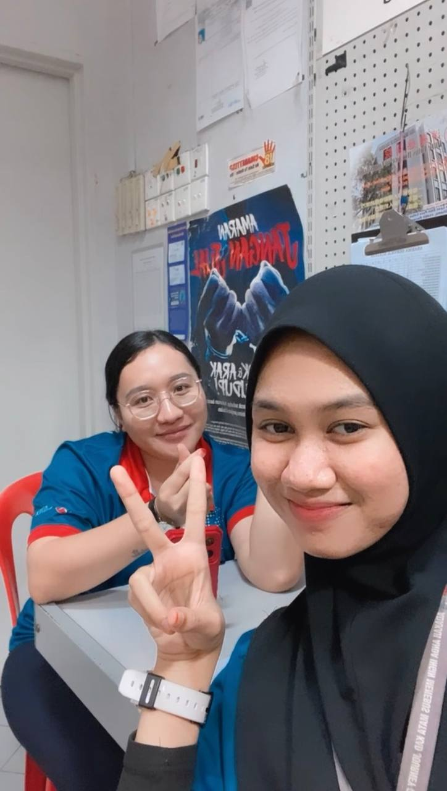
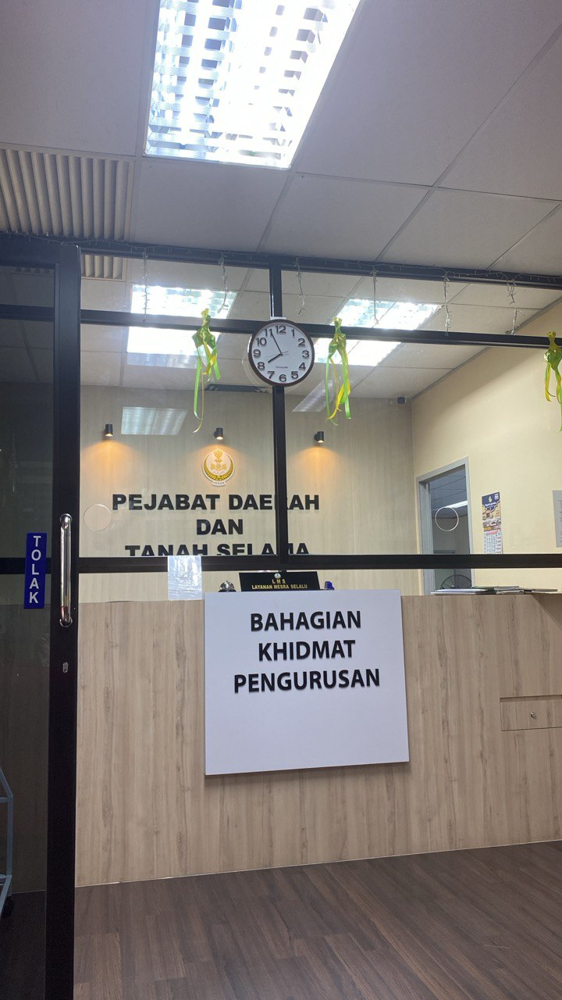
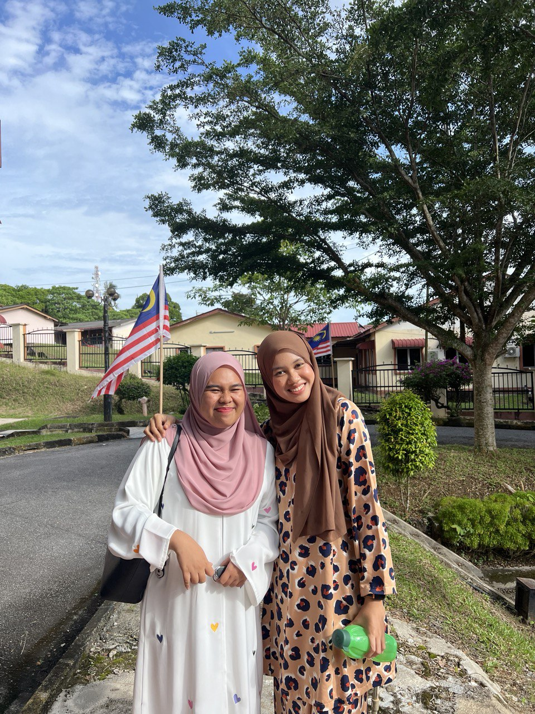

A Journey of Growth and DiscoveryPart Time JourneyThis is my colleague, Sherry. I am very happy working at Caltex because of its positive and cheerful environment. Working part-time at Caltex was a transformative journey where I developed skills in customer service, teamwork, and operational management while balancing responsibilities in a dynamic environment. Working at Caltex allowed me to grow both personally and professionally, as I navigated challenges, honed my problem-solving skills, and embraced a culture of positivity.

Internship JourneyMy internship at Selama District and Land Office, Perak, was a transformative journey where I gained hands-on experience, enhanced my skills, and contributed to impactful projects while collaborating with a dynamic team.

This is my intern partner. Her name is Aina. My internship journey was even more enjoyable as I had the opportunity to work alongside my friend, where we supported each other, tackled challenges together, and learned valuable skills in a collaborative environment.  |